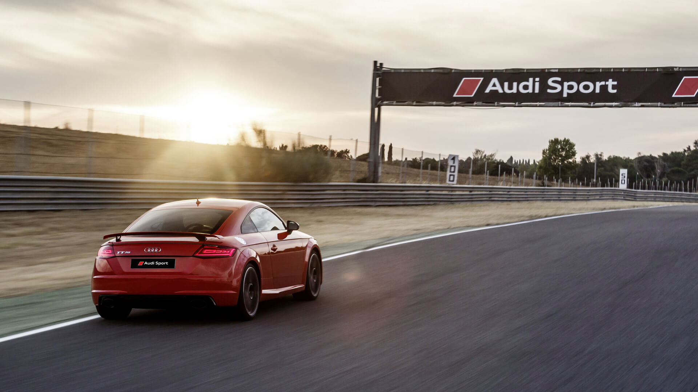
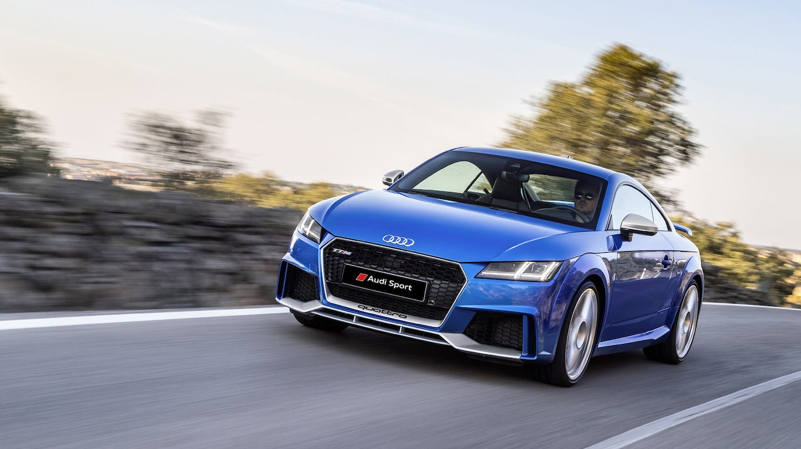

Сделайте глубокий вдох и приготовьтесь к самым невероятным впечатлениям за рулем TT RS Coupé. Благодаря новому пятицилиндровому двигателю ошеломляющее удовольствие от вождения сопровождается изумительным звуком силового агрегата. Двигатель мощностью 400 л. с. с максимальным крутящим моментом 480 Н·м разгоняет Audi TT RS Coupé до 100 км/ч всего за 3,7 секунды, а затем легко помогает достичь скорости в 250 км/ч. Для любителей риска максимальная скорость может быть ограничена на уровне 280 км/ч. Откройте для себя автомобиль-легенду дизайнерской мысли, который взял все лучшее от серии RS.
 Легенда дизайнерской мысли Уже более 15 лет Audi TT остается эталоном спортивного, прогрессивного дизайна. В 2014 году компания Audi представила третье поколение этой модели. С первого взгляда новый Audi TT производит впечатление атлетичного, мощного, готового к рывку автомобиля. И, действительно, дизайнеры пересмотрели оригинальный силуэт модели TT, выпущенной еще в 1998 году, с позиций современности и наполнили его целым рядом динамичных элементов. Более того, внешний вид Audi TT RS был дополнительно усовершенствован за счет использования деталей серии RS.
 Яркий атлетичный дизайн в полной мере соответствует впечатляющим возможностям этого автомобиля. Его бескомпромиссный спортивный характер подчеркивают многочисленные эффектные элементы внешней отделки, среди которых и карбоновые корпуса зеркал заднего вида, и бампер серии RS с крупными боковыми воздухозаборниками, и система выпуска отработавших газов серии RS с выхлопными трубами овальной формы. При необходимости тормозные суппорты с восемью поршнями, обеспечивающие мощное тормозное усилие, можно выполнить в красном цвете.